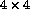

If a dimension has a scalar index it is collapsed. Consider,
!HPF$ DISTRIBUTE (BLOCK,BLOCK) :: A, B
...
CALL Xubbie(A(i,:),b(i,:))
...
SUBROUTINE Xubbie(x,y)
REAL, DIMENSION(:) :: x, y
!HPF$ DISTRIBUTE (BLOCK) :: x, y
This code fragment demonstrates a further example of `accidental' remapping. Here the actual arguments are 1D sections of 2D objects. As the original objects are distributed over a 2D grid, the 1D dummy arguments will only be mapped over a 1D slice of the processor array. The problem arises because the procedure specifies that the dummy arguments are distributed over the default processor grid (which may well contain all the processors).
For example, if the system is executing on a 16-processor grid, which is either viewed as a linear chain of 16 processors or as a  square grid, then A(i,:) and b(i,:) will be distributed onto a 4 processor slice (of the grid,) but the dummy arguments x and y will be distributed over the whole 16-processor chain. Due to the lack of intent specification, two remappings will take place, one on entry and one on exit.